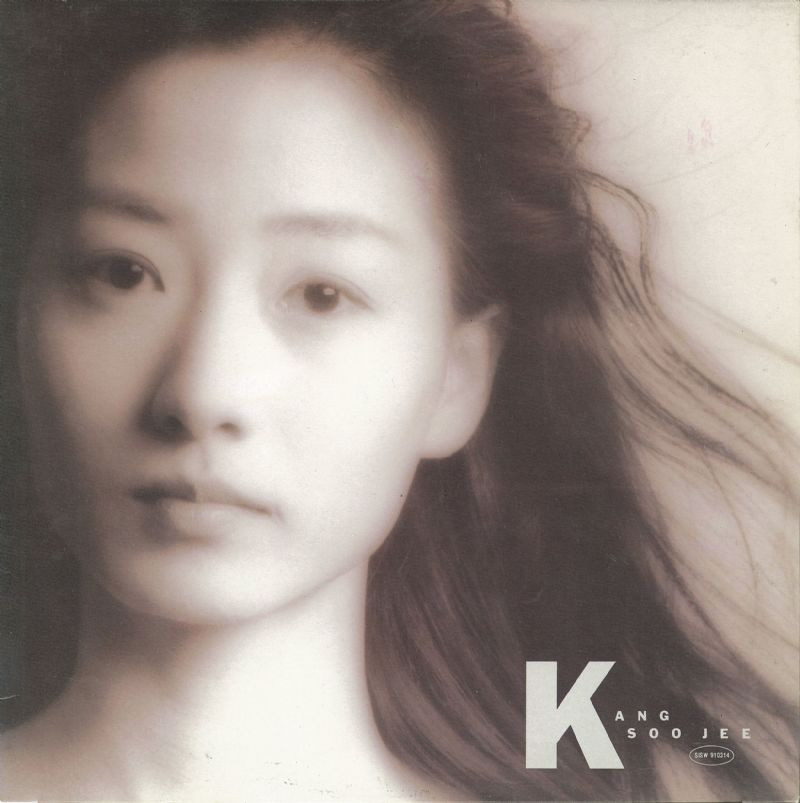

안녕하세요 라보엠입니다.
1991년, 한국 가요계에 새로운 바람을 일으킨 노래가 있었습니다. 바로 강수지의 2집 앨범 타이틀곡 "흩어진 나날들"입니다. 저는 어릴적 방학에 외가에 갈 때면, 이모가 모아놓은 LP 로 많이 들었던 기억이 납니다. 이 노래는 강수지의 청순한 이미지와 맑은 음색, 그리고 윤상의 감성적인 멜로디가 완벽하게 어우러진 작품으로, 90년대 초반을 대표하는 명곡으로 자리잡았습니다.
강수지 2집 흩어진 나날들 노래 소개
흩어진 나날들은 이별 후의 아픔과 그리움을 섬세하게 표현한 노래입니다. 강수지의 맑고 청아한 목소리와 윤상의 감성적인 멜로디가 완벽한 조화를 이루어, 많은 이들의 마음을 울렸습니다. 특히 이 노래는 강수지의 실제 경험을 바탕으로 한 가사로 알려져 더욱 큰 공감을 얻었습니다.
강수지의 2집 앨범은 1991년 8월 발매되었습니다. 이 앨범에는 총 8곡이 수록되어 있으며, 윤상을 비롯해 심상원, 신재홍, 서승현 등 실력파 작곡가들이 참여했습니다. 특히 타이틀곡 "흩어진 나날들"과 "시간속의 향기"는 강수지가 직접 작사에 참여하여 더욱 특별한 의미를 지닙니다.

강수지 흩어진 나날들 가사
아무 일없이 흔들리듯 거리를 서성이지
우연히 널 만날 수 있을까?
견딜 수가 없는 날 붙들고
울고 싶어
어두운 마음에 불을 켠듯한 이름 하나
이젠 무너져 버린 거야
힘겨운 나날들
그래 이제 우리는 스치고 지나가는
사람들처럼 그렇게 모른 체 살아가야지
아무런 상관없는 그런 사람들에겐
이별이란 없을 테니까
어두운 마음의 불을 켠 듯한 이름 하나
이제는 무너져 버린 거야
힘겨운 나날들
그래 이제 우리는 스치고 지나가는
사람들처럼 그렇게 모른 체 살아가야지
아무런 상관없는 그런 사람들에겐
이별이란 없을 테니까
그래 이제 우리는 스치고 지나가는
사람들처럼 그렇게 모른 체 살아가야지
아무런 상관없는 그런 사람들에겐
이별이란 없을 테니까
이 가사는 이별 후의 공허함과 그리움을 절절하게 표현하고 있습니다. 특히 "어두운 마음의 불을 켠 듯한 이름 하나"라는 구절은 많은 이들의 가슴에 깊이 새겨졌습니다.
흩어진 나날들의 인기
흩어진 나날들은 발매 직후부터 큰 인기를 얻어, MBC 인기가요 차트 1위에 올랐고, 당시 음악 전문 출판사인 세광출판사의 "독자가 뽑은 최신가요 TOP 10" 11월 차트에서 3주 연속 1위를 차지했습니다. 이 노래의 성공으로 강수지는 1991년 연말 각종 방송사 가요 시상식에서 본상을 휩쓸었고, MBC 10대 가수상도 수상했습니다. 특히 청소년부터 성인층까지 폭넓은 사랑을 받았으며, 남성 팬들 사이에서도 큰 인기를 얻었습니다.
리메이크
흩어진 나날들은 시간이 지나도 변함없는 사랑을 받고 있습니다. 작곡자 윤상을 비롯하여 조규찬, 박효신, , 소프라노 조수미, 밴드 캐스커, 남영주, 나희경 등 다양한 아티스트들이 이 노래를 리메이크하며 새로운 해석을 선보였습니다. 그중 개인적으로 박효신의 리메이크가 가장 좋네요.
맺음말
강수지의 흩어진 나날들은 90년대 한국 가요의 황금기를 대표하는 명곡입니다. 윤상 작곡의 섬세한 감성과 아름다운 멜로디, 그리고 강수지의 청아한 목소리가 만나 탄생한 이 노래는, 30년이 지난 지금도 많은 이들의 마음을 울리고 있습니다. 한국 대중음악사에 길이 남을 이 노래를 통해, 우리는 여전히 순수했던 그 시절의 감성을 느낄 수 있습니다.